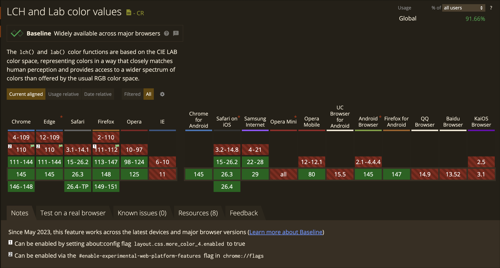

LCH is a color space that has several advantages over the RGB/HSL colors we're familiar with in CSS.
- Access to ~50% more colors
- Perceptually accurate
- Lightness actually means something


In the LCH color space, equal numerical changes in coordinates correspond to equal perceived differences in color.
This characteristic is known as perceptual uniformity.

In both rows, colors differ by 20 degrees in hue.
But is the perceived color difference between each pair actually the same?

*Both shades have the same chroma and saturation.
The HSL colors appear most vibrant when the lightness is set to 50 because no black or white is mixed in, leaving only the pure hue.
However, this description of lightness is misleading, since colors with the same HSL lightness value do not appear equally bright.
For example, yellow looks much lighter than blue even when both share the same lightness value.
LCH can be used when designing interface color systems.
For example, a designer can create button states such as default, hover, and disabled by adjusting lightness or chroma while keeping the same hue.
Try it for yourself by hovering over both buttons.
*only changed the lightness in both

Switching to LCH is super easy in VS Code! Just replace your color values:
/* Instead of this */
color: hsl(240, 100%, 50%);
background: hsl(240, 100%, 35%);
border: 1px solid hsl(240, 100%, 40%);
/* Use this instead */
color: lch(50% 80 265);
background: lch(35% 80 265);
border: 1px solid lch(40% 80 265);